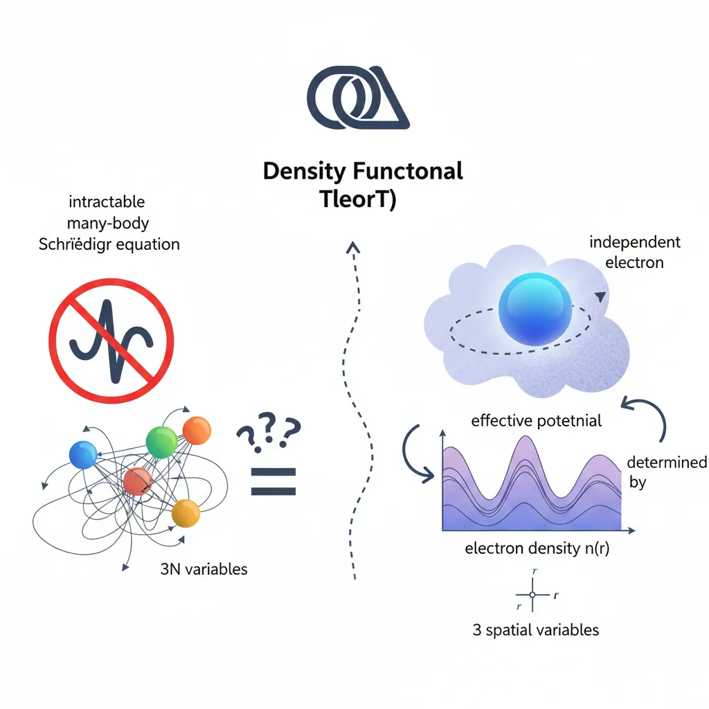
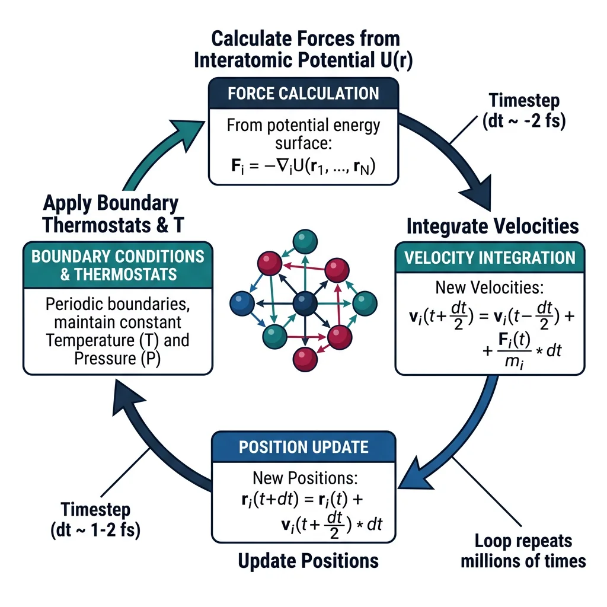
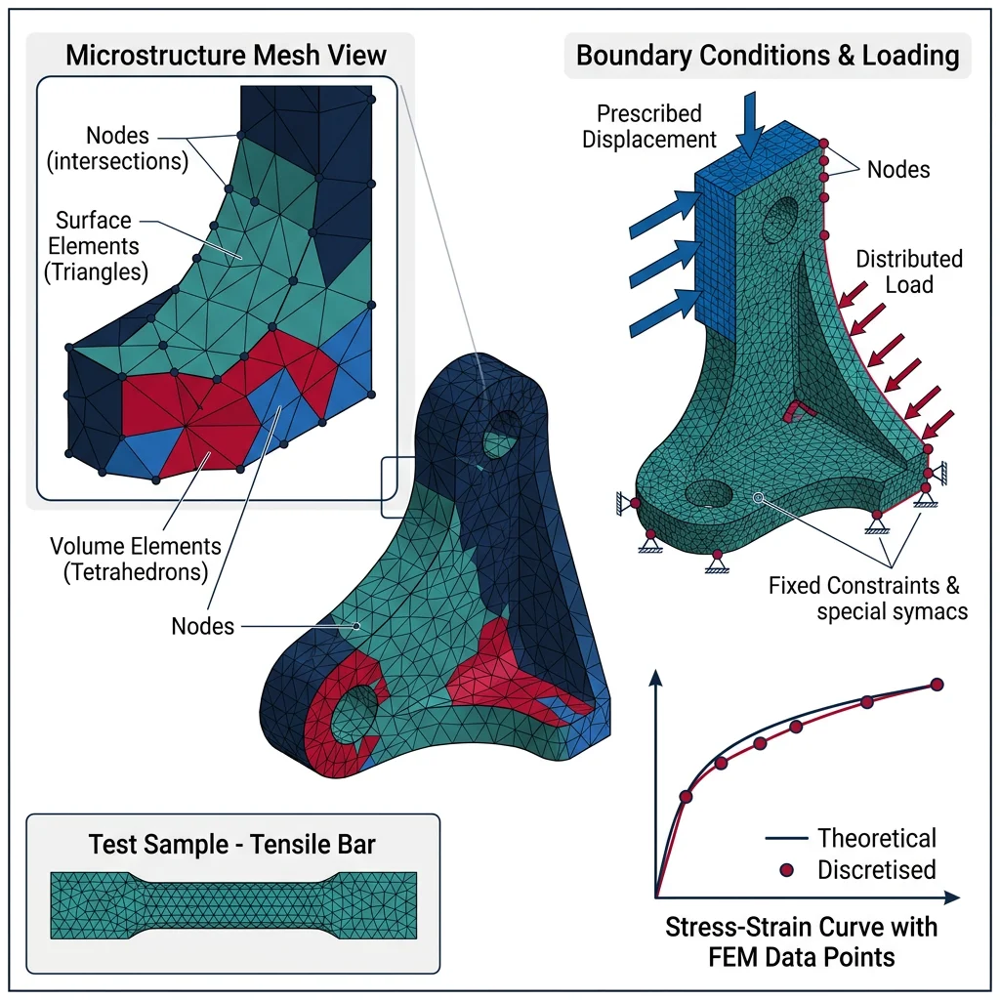
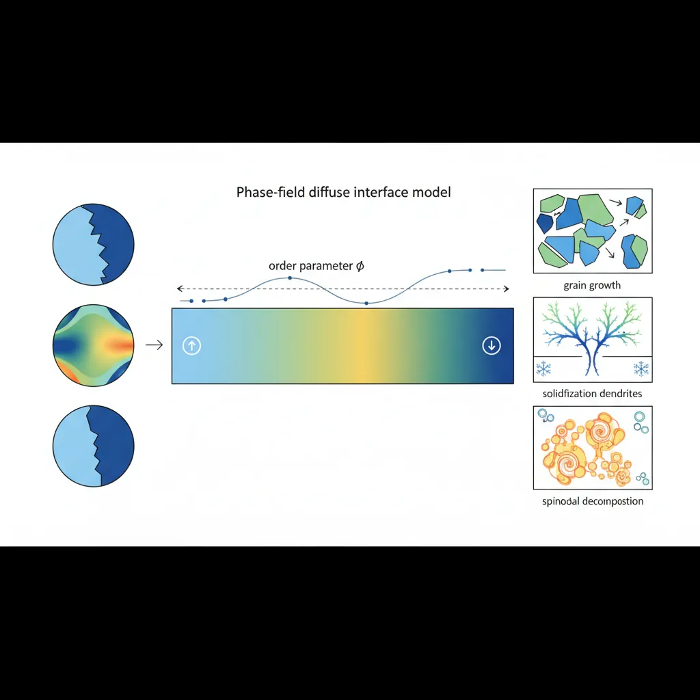
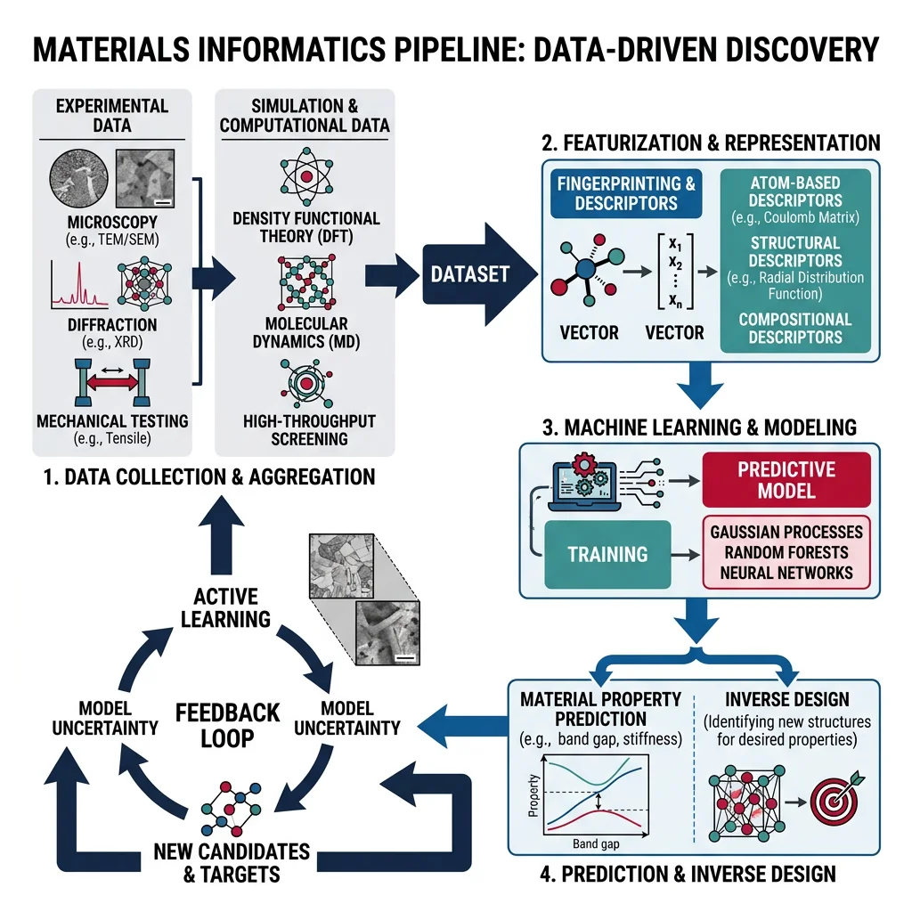

Ab Initio & Quantum Methods
Materials Science Mastery
Atomic Structure & Quantum Foundations
Quantum mechanics, bonding, band theory, Fermi energy, phononsCrystal Structures, Defects & Diffusion
FCC/BCC/HCP, Miller indices, dislocations, phase diagrams, Fick's lawsMetals & Alloys
Iron-carbon diagram, steels, aluminum, titanium, superalloys, heat treatmentPolymers & Soft Materials
Polymer chemistry, thermoplastics, viscoelasticity, rheology, biopolymersCeramics, Glass & Composites
Oxide ceramics, toughening, fiber-reinforced composites, interfacial bondingMechanical Behavior & Testing
Stress-strain, hardness, fatigue, fracture toughness, nanoindentationFailure Analysis & Reliability Engineering
Fractography, corrosion, tribology, root cause analysisNanomaterials & Smart Materials
Nanotubes, graphene, piezoelectrics, shape memory alloys, self-healingMaterials Characterization Techniques
XRD, SEM, TEM, AFM, DSC, TGA, spectroscopyThermodynamics & Kinetics of Materials
Gibbs free energy, CALPHAD, phase stability, solidificationElectronic, Magnetic & Optical Materials
Semiconductors, photovoltaics, dielectrics, superconductorsBiomaterials
Implants, biocompatibility, tissue engineering, drug deliveryEnergy Materials
Battery materials, hydrogen storage, fuel cells, nuclear materialsComputational Materials Science
DFT, molecular dynamics, FEM, materials informatics, AIAt the heart of quantum-mechanical materials modeling lies the Schrödinger equation. For a system of $N$ electrons and $M$ nuclei, the full many-body Schrödinger equation is:
$$\hat{H}\Psi(\mathbf{r}_1, \mathbf{r}_2, \ldots, \mathbf{r}_N) = E\Psi(\mathbf{r}_1, \mathbf{r}_2, \ldots, \mathbf{r}_N)$$
where $\hat{H}$ includes kinetic energy of all electrons, electron-nuclear attraction, electron-electron repulsion, and nuclear-nuclear repulsion. For anything beyond a hydrogen atom, solving this equation exactly is computationally impossible — the wavefunction depends on $3N$ spatial coordinates, making direct computation scale exponentially.

The Hohenberg-Kohn Theorems
DFT rests on two theorems proved by Hohenberg and Kohn in 1964:
- First Theorem: The ground-state electron density $n_0(\mathbf{r})$ uniquely determines the external potential $v(\mathbf{r})$ (and hence all ground-state properties). The density contains all the information.
- Second Theorem: There exists a universal energy functional $E[n]$ that is minimized by the true ground-state density. You can find the ground state by minimizing this functional.
The Kohn-Sham Equations
Kohn and Sham (1965) made DFT practical by mapping the interacting many-electron problem onto a system of non-interacting electrons moving in an effective potential:
$$\left[-\frac{\hbar^2}{2m}\nabla^2 + v_{\text{eff}}(\mathbf{r})\right]\phi_i(\mathbf{r}) = \epsilon_i \phi_i(\mathbf{r})$$
where $v_{\text{eff}} = v_{\text{ext}} + v_{\text{Hartree}} + v_{\text{xc}}$. The Hartree term captures classical electrostatic repulsion, and $v_{\text{xc}}$ — the exchange-correlation potential — captures everything else. The density is reconstructed from the Kohn-Sham orbitals: $n(\mathbf{r}) = \sum_i |\phi_i(\mathbf{r})|^2$. These equations are solved self-consistently until the density converges.
Exchange-Correlation Functionals
The accuracy of DFT hinges on the approximation chosen for $E_{\text{xc}}[n]$, the exchange-correlation functional. The hierarchy of approximations is often depicted as Jacob's Ladder:
Jacob's Ladder of DFT Functionals
| Rung | Functional Type | Examples | Accuracy |
|---|---|---|---|
| 1 | LDA — Local Density Approximation | VWN, PZ | Overbinds; decent for metals |
| 2 | GGA — Generalized Gradient Approx. | PBE, BLYP, PW91 | Good for solids & molecules |
| 3 | meta-GGA | SCAN, TPSS, r2SCAN | Better thermochemistry |
| 4 | Hybrid — Exact exchange mixed in | HSE06, PBE0, B3LYP | Best for band gaps, barriers |
| 5 | Double-hybrid / RPA | RPA, B2PLYP | Near chemical accuracy |
Rule of thumb Use PBE for metals and bulk solids, HSE06 when accurate band gaps matter (semiconductors, insulators), and r2SCAN when balanced accuracy across diverse chemistry is needed.
Pseudopotentials and Basis Sets
Core electrons are nearly inert in chemical bonding. Pseudopotentials (or PAW — Projector Augmented Wave) replace the deep nuclear potential and core electrons with a smooth effective potential, dramatically reducing the number of electrons that must be treated explicitly.
The Kohn-Sham orbitals must be expanded in some basis set:
- Plane waves: Naturally periodic, systematic convergence controlled by an energy cutoff. Ideal for crystals. Used by VASP, Quantum ESPRESSO.
- Localized basis sets: Gaussian-type orbitals (GTOs) or numerical atomic orbitals (NAOs). More efficient for molecules and large systems. Used by Gaussian, FHI-aims, SIESTA.
- Real-space grids: Discretize space directly. Used by GPAW (finite-difference mode), Octopus.
DFT Codes (VASP, QE, GPAW)
Major DFT Software Packages
| Code | Basis | License | Strengths |
|---|---|---|---|
| VASP | Plane wave / PAW | Commercial | Most widely used for solids; excellent documentation; robust parallelization |
| Quantum ESPRESSO | Plane wave / PAW | Open source (GPL) | Free; strong community; phonons (DFPT); electron-phonon coupling |
| GPAW | PAW / real-space / LCAO | Open source (GPL) | Python-based (ASE integration); flexible; TDDFT support |
| Gaussian | GTOs | Commercial | Gold standard for molecules; vast functional library; coupled-cluster |
| FHI-aims | Numeric atom-centered | Academic license | All-electron; excellent for surfaces and hybrid functionals |
| CP2K | Mixed Gaussian / PW | Open source | Large-scale DFT-MD; linear scaling methods |
DFT Applications in Materials Science
DFT is the computational workhorse of modern materials science, enabling prediction of:
- Band structures — electronic band dispersion along high-symmetry paths in the Brillouin zone, revealing metallic vs. semiconducting behavior
- Formation energies — thermodynamic stability of compounds, alloys, and defects (vacancies, interstitials, dopants)
- Surface adsorption — binding energies and geometries of molecules on catalyst surfaces, critical for heterogeneous catalysis design
- Elastic constants — full elastic tensor from stress-strain calculations
- Phonon spectra — lattice dynamics via density functional perturbation theory (DFPT)
Python Example: Model Electronic Density of States
import numpy as np
import matplotlib.pyplot as plt
# Model a density of states (DOS) for a semiconductor
# Valence band: Gaussian centered at -2 eV
# Conduction band: Gaussian centered at +1.5 eV
# Band gap ~1.1 eV (similar to silicon)
energy = np.linspace(-6, 6, 500) # eV
# Valence band DOS (parabolic-like, modeled as sum of Gaussians)
valence = 1.8 * np.exp(-((energy + 2.0)**2) / (2 * 0.8**2)) + \
0.9 * np.exp(-((energy + 3.5)**2) / (2 * 0.5**2))
# Conduction band DOS
conduction = 1.5 * np.exp(-((energy - 1.5)**2) / (2 * 0.7**2)) + \
0.7 * np.exp(-((energy - 3.0)**2) / (2 * 0.6**2))
# Total DOS — zero in the gap region
dos = valence + conduction
# Fermi energy at mid-gap
E_fermi = -0.25
fig, ax = plt.subplots(figsize=(8, 5))
ax.fill_between(energy, dos, where=(energy <= E_fermi), alpha=0.4,
color='steelblue', label='Occupied states')
ax.fill_between(energy, dos, where=(energy > E_fermi), alpha=0.4,
color='coral', label='Unoccupied states')
ax.plot(energy, dos, 'k-', linewidth=1.2)
ax.axvline(E_fermi, color='red', linestyle='--', label=f'$E_F$ = {E_fermi} eV')
ax.axvspan(-0.5, 0.6, alpha=0.1, color='yellow', label='Band gap (~1.1 eV)')
ax.set_xlabel('Energy (eV)', fontsize=12)
ax.set_ylabel('Density of States (arb. units)', fontsize=12)
ax.set_title('Model Electronic Density of States — Semiconductor', fontsize=13)
ax.legend(fontsize=10)
ax.set_xlim(-6, 6)
ax.set_ylim(0, None)
plt.tight_layout()
plt.show()Case Study: DFT Prediction of Battery Cathode Materials
The Materials Project used high-throughput DFT (GGA+U with PBE functional and Hubbard U correction for transition metals) to screen thousands of potential lithium-ion battery cathode chemistries. Key workflow:
- Structure generation: Enumerate all ordered LixMO2 configurations (M = Mn, Co, Ni, Fe, V) using enumeration algorithms
- DFT calculations: Relax structures and compute total energies using VASP with PAW pseudopotentials and a 520 eV plane-wave cutoff
- Voltage prediction: Average intercalation voltage $V = -\Delta G / (n_e \cdot F) \approx -\Delta E_{\text{DFT}} / (n_e \cdot F)$
- Stability analysis: Construct convex hulls to assess thermodynamic stability against decomposition
Result: DFT-predicted voltages for LiCoO2 (~3.9 V), LiFePO4 (~3.4 V), and LiMn2O4 (~4.1 V) matched experimental values within 0.1–0.2 V. The approach identified novel disordered rocksalt cathodes (Li1.2Mn0.4Ti0.4O2) that were subsequently synthesized and validated, demonstrating DFT as a predictive screening tool for energy materials.
Atomistic Simulations
Classical Molecular Dynamics (MD) simulates the time evolution of atomic systems by numerically integrating Newton's equations of motion: $m_i \ddot{\mathbf{r}}_i = \mathbf{F}_i = -\nabla_i U(\mathbf{r}_1, \ldots, \mathbf{r}_N)$, where $U$ is the interatomic potential energy. At each timestep (typically 1–2 femtoseconds), forces on all atoms are computed from the potential, positions and velocities are updated, and the process repeats for millions of steps.

Statistical Ensembles
MD simulations can run under different thermodynamic constraints (ensembles):
- NVE (Microcanonical): Fixed number of particles, volume, and total energy. True Newtonian dynamics; useful for verifying energy conservation.
- NVT (Canonical): Fixed N, V, temperature. A thermostat (Nosé-Hoover, Langevin, Berendsen) controls temperature. Most common for equilibrium properties.
- NPT (Isothermal-Isobaric): Fixed N, pressure, temperature. A barostat adjusts the simulation cell volume. Essential for computing thermal expansion, density, and phase transitions at constant pressure.
Interatomic Potentials & MLIPs
The accuracy and speed of MD are determined entirely by the choice of interatomic potential — the function $U(\mathbf{r}_1, \ldots, \mathbf{r}_N)$ that approximates the potential energy surface:
Interatomic Potential Landscape
| Potential | Form | Best For | Atoms/Speed |
|---|---|---|---|
| Lennard-Jones | $U = 4\varepsilon[(\sigma/r)^{12} - (\sigma/r)^6]$ | Noble gases, toy models | 106+ / Very fast |
| EAM | Pair + embedding function of electron density | FCC metals (Al, Cu, Ni, Au) | 106 / Fast |
| Tersoff/REBO | Bond-order + angular terms | Si, C, SiC, graphene | 105 / Moderate |
| ReaxFF | Reactive bond-order with charge equilibration | Combustion, oxidation, polymers | 104 / Slow |
| GAP / ACE | Gaussian process / polynomial body-order | Near-DFT accuracy, any system | 104–105 / Moderate |
| MACE / NequIP | Equivariant graph neural networks | Universal, multi-element systems | 104–105 / Moderate |
Key trend Machine-learned interatomic potentials (MLIPs) — trained on DFT data — are rapidly replacing classical force fields, offering near-DFT accuracy at a fraction of the cost. Foundation models like MACE-MP-0 provide "universal" potentials trained across the periodic table.
Key MD Applications
- Diffusion coefficients: Track mean-square displacement $\langle |\mathbf{r}(t) - \mathbf{r}(0)|^2 \rangle = 6Dt$ to extract diffusivity
- Phase transitions: Observe melting, solidification, martensitic transformations by ramping temperature or pressure
- Dislocation dynamics: Study dislocation nucleation, glide, and interaction with obstacles (precipitates, grain boundaries)
- Thermal conductivity: Non-equilibrium MD (Müller-Plathe) or Green-Kubo formalism from heat flux autocorrelation
Monte Carlo Methods
Unlike MD, which follows deterministic trajectories, Monte Carlo (MC) methods sample configurations stochastically, using random trial moves accepted or rejected according to the Metropolis criterion:
$$P_{\text{accept}} = \min\left(1,\; e^{-\Delta E / k_B T}\right)$$
If a trial move lowers energy, it is always accepted. If it raises energy by $\Delta E$, it is accepted with probability $e^{-\Delta E / k_B T}$. Over thousands of moves, the system samples the Boltzmann distribution. Kinetic Monte Carlo (KMC) extends this to study rare events (diffusion hops, surface growth) by assigning rates to each possible transition and advancing time proportionally.
Python Example: Simple 2D Lennard-Jones MD Simulation
import numpy as np
import matplotlib.pyplot as plt
# --- Simple 2D Lennard-Jones Molecular Dynamics ---
np.random.seed(42)
# Parameters
N = 36 # Number of particles
L = 10.0 # Box size
dt = 0.005 # Timestep (reduced units)
nsteps = 800 # Number of MD steps
epsilon = 1.0 # LJ energy parameter
sigma = 1.0 # LJ length parameter
rc = 2.5 * sigma # Cutoff radius
# Initialize positions on a grid
side = int(np.ceil(np.sqrt(N)))
positions = np.array([[i, j] for i in range(side) for j in range(side)][:N],
dtype=float)
positions = positions * (L / side) + 0.5
# Random initial velocities (zero net momentum)
velocities = np.random.randn(N, 2) * 0.5
velocities -= velocities.mean(axis=0)
def compute_forces(pos, L, eps, sig, rc):
"""Compute LJ forces with periodic boundary conditions."""
forces = np.zeros_like(pos)
pe = 0.0
for i in range(len(pos)):
for j in range(i + 1, len(pos)):
dr = pos[j] - pos[i]
dr -= L * np.round(dr / L) # Minimum image convention
r2 = np.dot(dr, dr)
if r2 < rc**2 and r2 > 0.01:
r6 = (sig**2 / r2)**3
f_mag = 24 * eps * (2 * r6**2 - r6) / r2
forces[i] -= f_mag * dr
forces[j] += f_mag * dr
pe += 4 * eps * (r6**2 - r6)
return forces, pe
# Velocity Verlet integration
ke_list, pe_list = [], []
forces, pe = compute_forces(positions, L, epsilon, sigma, rc)
for step in range(nsteps):
# Half-step velocity
velocities += 0.5 * dt * forces
# Full-step position with periodic wrapping
positions += dt * velocities
positions %= L
# Recompute forces
forces, pe = compute_forces(positions, L, epsilon, sigma, rc)
# Half-step velocity
velocities += 0.5 * dt * forces
# Record energies
ke = 0.5 * np.sum(velocities**2)
ke_list.append(ke)
pe_list.append(pe)
# Plot energy conservation
fig, axes = plt.subplots(1, 2, figsize=(12, 4))
total_e = np.array(ke_list) + np.array(pe_list)
axes[0].plot(ke_list, label='Kinetic', alpha=0.8)
axes[0].plot(pe_list, label='Potential', alpha=0.8)
axes[0].plot(total_e, label='Total', linewidth=2, color='black')
axes[0].set_xlabel('Step')
axes[0].set_ylabel('Energy (reduced units)')
axes[0].set_title('Energy Conservation in NVE MD')
axes[0].legend()
# Final configuration
axes[1].scatter(positions[:, 0], positions[:, 1], s=80, c='steelblue',
edgecolors='navy', alpha=0.8)
axes[1].set_xlim(0, L)
axes[1].set_ylim(0, L)
axes[1].set_aspect('equal')
axes[1].set_title(f'Final Configuration ({N} LJ particles)')
axes[1].set_xlabel('x')
axes[1].set_ylabel('y')
plt.tight_layout()
plt.show()
print(f"Energy drift: {abs(total_e[-1] - total_e[0]):.4f} (reduced units)")Case Study: MD Simulation of Crack Propagation in Metals
Researchers at Sandia National Laboratories used large-scale MD with EAM potentials in LAMMPS to study crack-tip behavior in single-crystal copper:
- Setup: 10-million-atom copper single crystal with a pre-crack along the (111) plane. EAM potential by Mishin et al. (2001). NPT ensemble at 300 K.
- Loading: Mode I tensile loading applied by displacing boundary atoms at a constant strain rate of 108 s-1.
- Observation: At the critical stress intensity $K_{Ic}$, the crack tip emitted partial dislocations on {111} slip planes at 45° to the crack front — blunting the crack instead of brittle cleavage.
- Insight: The competition between dislocation emission (ductile) and bond breaking (brittle) at the crack tip depends on the ratio of surface energy $\gamma_s$ to unstable stacking fault energy $\gamma_{\text{usf}}$ — Rice's criterion confirmed atomistically.
Impact: MD revealed that the crack propagation speed in FCC metals is limited to ~60% of the Rayleigh wave speed due to lattice trapping effects — something continuum fracture mechanics could not predict.
Continuum & Mesoscale Methods
While atomistic simulations resolve individual atoms, engineering components operate at the millimeter-to-meter scale. The Finite Element Method (FEM) bridges this gap by solving continuum partial differential equations (equilibrium, heat conduction, fluid flow) on discretized domains.

FEM Fundamentals
The FEM workflow consists of three stages:
- Pre-processing: Create geometry → generate mesh (triangles/tetrahedra for complex shapes, hexahedra for higher accuracy) → define material properties → apply boundary conditions (loads, constraints, temperatures)
- Solution: Assemble the global stiffness matrix $[K]\{u\} = \{F\}$ → solve for nodal displacements $\{u\}$ → compute strains $\{\varepsilon\} = [B]\{u\}$ → compute stresses $\{\sigma\} = [D]\{\varepsilon\}$
- Post-processing: Visualize stress contours, deformation, safety factors; verify convergence with mesh refinement
Linear vs. Nonlinear FEM
- Linear FEM: Small deformations, linear elastic material, fixed boundary conditions. Single matrix solve. Fast and reliable for most structural analysis.
- Nonlinear FEM: Required for large deformations (rubber, crash simulation), plastic yielding (metal forming), contact (gear meshing), and material failure. Solved iteratively (Newton-Raphson). Much more computationally expensive.
FEM Applications in Materials Science
- Stress analysis: Predict failure locations in components under complex loading (thermal + mechanical + residual stresses)
- Thermal modeling: Simulate heat treatment (quenching, tempering), welding thermal cycles, and additive manufacturing temperature fields
- Manufacturing simulation: Sheet metal forming, forging, casting solidification, injection molding — predict defects before production
- Composites: Micromechanical models of fiber-matrix interactions; progressive damage in laminated composites
Phase-Field Modeling
Phase-field models describe microstructure evolution by introducing continuous order parameters $\phi(\mathbf{r}, t)$ that vary smoothly across interfaces — avoiding the need to explicitly track sharp boundaries. The evolution follows the Allen-Cahn (non-conserved) or Cahn-Hilliard (conserved) equations:

$$\frac{\partial \phi}{\partial t} = -L \frac{\delta F}{\delta \phi} \quad \text{(Allen-Cahn)} \qquad \frac{\partial c}{\partial t} = \nabla \cdot \left(M \nabla \frac{\delta F}{\delta c}\right) \quad \text{(Cahn-Hilliard)}$$
Applications include grain growth, solidification dendrite formation, spinodal decomposition, martensitic transformations, and crack propagation. Phase-field is the dominant method for simulating microstructure evolution at the mesoscale (microns to millimeters).
Multiscale Modeling
FEM/Continuum Software Comparison
| Software | License | Strengths | Typical Use |
|---|---|---|---|
| ABAQUS | Commercial (Dassault) | Gold standard for nonlinear mechanics; user subroutines (UMAT) | Structural, crash, forming |
| ANSYS | Commercial | Broad multiphysics; excellent meshing; Fluent for CFD | Multiphysics, thermal, fluid |
| COMSOL | Commercial | Equation-based modeling; easy PDE coupling; GUI-friendly | Research, electromagnetics |
| FEniCS / FEniCSx | Open source | Python API; variational formulation; research-grade flexibility | Custom PDE research |
| Moose Framework | Open source (INL) | Multiphysics + phase-field; nuclear applications | Phase-field, nuclear |
| CalculiX | Open source (GPL) | ABAQUS-compatible input; free alternative | Structural analysis |
Python Example: 1D FEM Bar Element Stress Calculation
import numpy as np
import matplotlib.pyplot as plt
# --- 1D FEM: Three-element bar under axial load ---
# Bar: 3 elements, 4 nodes
# Fixed at node 0, force F applied at node 3
# Material and geometry
E = 200e9 # Young's modulus (Pa) — steel
A = 0.001 # Cross-sectional area (m^2)
L_elem = 0.5 # Element length (m)
n_elem = 3 # Number of elements
n_nodes = n_elem + 1
F_applied = 50000 # Applied force at rightmost node (N)
# Element stiffness matrix for a 1D bar element:
# k_e = (EA/L) * [[1, -1], [-1, 1]]
# Assemble global stiffness matrix
K_global = np.zeros((n_nodes, n_nodes))
for e in range(n_elem):
k_e = (E * A / L_elem) * np.array([[1, -1], [-1, 1]])
K_global[e:e+2, e:e+2] += k_e
print("Global Stiffness Matrix (N/m):")
print(K_global / 1e9, "× 10^9")
# Apply boundary conditions: node 0 is fixed (u_0 = 0)
# Remove row/col 0 → solve reduced system
K_reduced = K_global[1:, 1:]
F_vector = np.zeros(n_nodes - 1)
F_vector[-1] = F_applied # Force at last free node
# Solve for displacements
u_free = np.linalg.solve(K_reduced, F_vector)
u = np.concatenate([[0.0], u_free]) # Include fixed node
# Compute element stresses: sigma = E * strain = E * (u_{i+1} - u_i) / L
stresses = np.array([E * (u[i+1] - u[i]) / L_elem for i in range(n_elem)])
print(f"\nNodal Displacements (mm): {u * 1000}")
print(f"Element Stresses (MPa): {stresses / 1e6}")
print(f"Analytical stress (F/A): {F_applied / A / 1e6:.1f} MPa")
# Visualization
fig, (ax1, ax2) = plt.subplots(1, 2, figsize=(12, 4))
nodes_x = np.linspace(0, n_elem * L_elem, n_nodes)
ax1.plot(nodes_x, u * 1000, 'bo-', markersize=8, linewidth=2)
ax1.set_xlabel('Position along bar (m)')
ax1.set_ylabel('Displacement (mm)')
ax1.set_title('Nodal Displacements')
ax1.grid(True, alpha=0.3)
elem_centers = [(nodes_x[i] + nodes_x[i+1]) / 2 for i in range(n_elem)]
ax2.bar(elem_centers, stresses / 1e6, width=0.3, color='coral',
edgecolor='darkred')
ax2.axhline(F_applied / A / 1e6, color='green', linestyle='--',
label='Analytical (F/A)')
ax2.set_xlabel('Position along bar (m)')
ax2.set_ylabel('Stress (MPa)')
ax2.set_title('Element Stresses')
ax2.legend()
ax2.grid(True, alpha=0.3)
plt.tight_layout()
plt.show()Materials Informatics & AI
The Materials Genome Initiative (MGI), launched in 2011, catalyzed a paradigm shift: treat materials data as a strategic resource. Materials informatics applies data science — databases, descriptors, machine learning, and active learning — to accelerate discovery and design.

Materials Databases
Major Materials Databases
| Database | Data Source | Entries | Specialization |
|---|---|---|---|
| Materials Project | DFT (VASP/GGA+U) | 150,000+ materials | Crystal structures, band gaps, elastic properties, phase stability |
| AFLOW | DFT (VASP) | 3.5M+ entries | Alloys, thermodynamic properties, symmetry analysis |
| OQMD | DFT (VASP/PAW) | 1M+ entries | Formation energies, thermodynamic stability |
| ICSD | Experimental XRD | 280,000+ structures | Experimentally determined crystal structures |
| NOMAD | DFT (all codes) | 12M+ calculations | Raw computation data; code-agnostic repository |
| Citrination | Literature + DFT | Varied | Polymer and materials properties; NLP-extracted data |
Descriptors and Featurization
Machine learning models cannot directly ingest a crystal structure or chemical formula. Featurization converts materials into numerical vectors:
- Composition-based: Elemental statistics — mean/std of electronegativity, atomic radius, ionization energy, valence electrons. Libraries:
matminer,CBFV. - Structure-based: Radial distribution functions, Voronoi tessellation features, Coulomb matrices, smooth overlap of atomic positions (SOAP). Libraries:
matminer,DScribe. - Graph-based: Atoms as nodes, bonds as edges; fed into graph neural networks (GNNs). Libraries:
MEGNet,CGCNN,M3GNet.
ML for Materials Discovery
Machine learning models trained on DFT or experimental data can predict material properties in milliseconds — enabling screening of millions of candidate materials:
- Random Forests / Gradient Boosting: Robust baseline models for tabular composition features. Interpretable via feature importance.
- Gaussian Process Regression (GPR): Provides uncertainty estimates alongside predictions — ideal for active learning loops where you want to know what to compute next.
- Graph Neural Networks (GNNs): CGCNN, MEGNet, M3GNet learn directly from crystal structure graphs. State-of-the-art accuracy for formation energy, band gap, and bulk modulus prediction.
- Generative models: VAEs, GANs, and diffusion models trained on crystal structures can propose entirely new compositions and structures not in any existing database. The most influential of these is CDVAE (Crystal Diffusion VAE), covered in depth below.
Crystal Diffusion VAE (CDVAE) — Generative Design of New Materials
Traditional materials discovery works like searching a library — you look through existing shelves hoping to find what you need. CDVAE flips the paradigm: instead of searching, it designs entirely new crystal structures that have never existed before, optimized for specific properties you care about. Introduced by Xie et al. (2022) at MIT, CDVAE is the first generative model capable of producing stable, valid, periodic crystal structures in 3D — a breakthrough that earned it recognition as a milestone in AI-driven materials discovery.
Why Traditional Generative Models Fail for Crystals
Before CDVAE, researchers tried applying standard generative AI (VAEs, GANs) to crystal design, but crystals present unique challenges that images or molecules don't:
- Periodicity: Crystals repeat infinitely in 3D. The model must respect .periodic boundary conditions — atoms near a unit cell edge interact with atoms at the opposite edge.
- Variable composition: Unlike molecules with fixed atom counts, a unit cell can have anywhere from 1 to 100+ atoms of different elements.
- Continuous + discrete: Atom positions are continuous (x, y, z coordinates), but atom types are discrete (carbon, silicon, oxygen). The model must handle both simultaneously.
- Symmetry awareness: Crystal properties depend on space group symmetry. A slight shift in atom positions can change a conductor into an insulator.
CDVAE solves all of these problems by combining two powerful ideas: Variational Autoencoders (VAEs) for learning a compressed representation, and diffusion models for iteratively refining noisy atom positions into physically valid structures.
How CDVAE Works — The Three-Stage Pipeline
CDVAE operates in three stages, each handling a different aspect of crystal generation:
CDVAE Architecture: Three-Stage Crystal Generation Pipeline
============================================================
KNOWN CRYSTAL NEW CRYSTAL
(Training Data) (Generated)
┌─────────────┐ ┌─────────────┐
│ ● Si ● Si │ │ ● Ga ● N │
│ ● Si │ │ ● Ga │
│ ● Si ● Si │ │ ● N ● Ga │
└──────┬──────┘ └──────▲──────┘
│ │
▼ │
╔════════════════╗ ╔══════════════════╗ ╔════════════════════╗
║ STAGE 1: ║ ║ STAGE 2: ║ ║ STAGE 3: ║
║ ENCODE ║───▶║ DIFFUSE ║───▶║ DECODE ║
╠════════════════╣ ╠══════════════════╣ ╠════════════════════╣
║ Graph Neural ║ ║ Forward: Add ║ ║ Predict: ║
║ Network (GNN) ║ ║ noise to atom ║ ║ • Atom types ║
║ ║ ║ positions ║ ║ (C, Si, Ga...) ║
║ Encodes: ║ ║ ║ ║ • Lattice params ║
║ • Atom types ║ ║ Reverse: Denoise ║ ║ (a, b, c, α, ║
║ • Positions ║ ║ step by step ║ ║ β, γ) ║
║ • Lattice ║ ║ to recover valid ║ ║ • Atom positions ║
║ • Bonds ║ ║ positions ║ ║ (x, y, z) ║
║ ↓ ║ ║ ↓ ║ ║ ║
║ Latent Vector ║ ║ Denoising Score ║ ║ Complete crystal ║
║ z ∈ ℝᵈ ║ ║ Matching ║ ║ structure ║
╚════════════════╝ ╚══════════════════╝ ╚════════════════════╝
Learns compressed Handles continuous Reconstructs full
representation of atom coordinates via periodic structure
crystal structure iterative refinement with valid chemistryLet's walk through each stage:
What Makes CDVAE Special — Comparison with Other Approaches
| Feature | Standard VAE | GAN | CDVAE |
|---|---|---|---|
| Handles periodicity | ✘ No | ✘ No | ✔ Yes — periodic equivariant GNN |
| Variable atom count | ✘ Fixed size | ✘ Fixed size | ✔ Any number of atoms per cell |
| Continuous + discrete | Continuous only | Continuous only | ✔ Positions (continuous) + types (discrete) |
| Stability of outputs | ~15% stable | ~20% stable | ~55% stable (near-DFT relaxed) |
| Valid crystal structures | Often unphysical | Mode collapse | ✔ Periodic, charge-balanced |
| Property optimization | Limited | Conditional | ✔ Latent space optimization |
Generating Materials with Target Properties
CDVAE's real power lies in conditional generation — not just producing any crystal, but producing crystals with specific desired properties. The process works like this:
- Train CDVAE on a large database of known crystal structures (e.g., Materials Project with 40,000+ structures)
- Explore the latent space: Each point in the latent space $z$ corresponds to a potential crystal. Nearby points represent similar structures.
- Optimize in latent space: Use gradient descent to find latent vectors $z^*$ that a property predictor (trained jointly or separately) predicts will have the desired property — for example, a band gap of exactly 1.5 eV for solar cells
- Decode to crystal: Pass $z^*$ through the decoder + diffusion denoiser to produce a concrete structure
- Validate with DFT: Run a full DFT relaxation and property calculation on the generated structure to confirm stability and properties
Case Study: CDVAE Discovers Stable Perovskite Structures
In the original 2022 paper by Xie et al. (MIT), CDVAE was trained on three challenging benchmark datasets to demonstrate its capabilities:
- Perovskites (10,153 structures): Cubic ABX3 perovskites widely used in solar cells. CDVAE generated structures with 54.7% structural validity (vs. 1.6% for standard VAE), and matched the property distribution of formation energy within 0.1 eV/atom.
- Carbon allotropes (10,153 structures): All-carbon structures with diverse lattices (graphite, diamond, fullerene variants). CDVAE achieved 98.5% composition validity for this single-element challenge.
- MP-20 (Materials Project, 45,231 structures): The most challenging dataset with up to 20 atoms per cell across 56 elements. CDVAE was the first model to generate stable multi-element structures at scale.
Key achievement: Using property-guided optimization in latent space, CDVAE generated perovskite structures with formation energies 15% lower (more stable) than the training data average — meaning it discovered structures more stable than those it had seen.
Getting Started with CDVAE
CDVAE is open source and available on GitHub (txie-93/cdvae). For beginners, here's a practical roadmap to understand and use generative crystal models:
- Prerequisites: Understand basic crystallography (Part 2 of this series) and Python. Familiarity with PyTorch and graph neural networks is helpful but not required to use pre-trained models.
- Environment setup: CDVAE requires PyTorch, PyTorch Geometric (for GNNs), and
pymatgen(for crystal structure handling). A GPU with 8+ GB VRAM is recommended for training. - Start with pre-trained models: The repository includes pre-trained weights for perovskite, carbon, and MP-20 datasets. Generate structures first, then validate with the
pymatgenstructure analyzer. - Validate your outputs: Always check generated structures against DFT before experimental synthesis. Use the Materials Project API to compare formation energies against known phases.
Active Learning and Bayesian Optimization
Active learning iteratively selects the most informative candidates for expensive DFT calculations, guided by model uncertainty. A typical loop:
- Train a surrogate model (GPR or ensemble) on available DFT data
- Score all uncomputed candidates by an acquisition function (expected improvement, upper confidence bound, or probability of improvement)
- Run DFT on the top-ranked candidates
- Add results to the training set and retrain — repeat until convergence or budget exhausted
This Bayesian optimization approach can find optimal materials in 10–50 iterations instead of brute-force screening of 100,000+ candidates.
High-Throughput Screening
High-throughput computational screening (HTCS) combines automated DFT workflows, materials databases, and filtering criteria to systematically search chemical space. A typical HTCS pipeline:
- Candidate generation: Enumerate compositions/structures from substitution rules or prototype databases
- Tier-1 filter: Composition-based ML screening — discard thermodynamically unstable candidates (energy above hull > 50 meV/atom)
- Tier-2 filter: DFT relaxation and property calculation on survivors
- Tier-3 filter: Detailed calculations (phonon stability, surface energies, defect formation) on top candidates
- Experimental validation: Synthesize and characterize the final shortlist
Python Example: Predict Material Property from Composition
import numpy as np
from sklearn.ensemble import RandomForestRegressor
from sklearn.model_selection import cross_val_score
import matplotlib.pyplot as plt
# --- Predict band gap from composition-based features ---
# Simplified: features = [electronegativity_mean, atomic_radius_mean,
# valence_electrons_mean, atomic_mass_mean]
# Each row represents a different material compound
np.random.seed(42)
n_materials = 200
# Generate synthetic composition features (mimicking real elemental statistics)
electroneg_mean = np.random.uniform(1.0, 3.5, n_materials)
atomic_radius_mean = np.random.uniform(0.5, 2.5, n_materials)
valence_mean = np.random.uniform(1, 8, n_materials)
mass_mean = np.random.uniform(10, 200, n_materials)
X = np.column_stack([electroneg_mean, atomic_radius_mean,
valence_mean, mass_mean])
# Synthetic band gap (eV): higher electronegativity diff → larger gap
# Plus some nonlinear effects and noise
band_gap = (0.8 * electroneg_mean**1.5
- 0.3 * valence_mean
+ 0.1 * atomic_radius_mean
+ np.random.normal(0, 0.3, n_materials))
band_gap = np.clip(band_gap, 0, 8) # Physical constraint: >= 0
# Train Random Forest
rf = RandomForestRegressor(n_estimators=100, max_depth=10, random_state=42)
scores = cross_val_score(rf, X, band_gap, cv=5, scoring='r2')
print(f"5-Fold CV R² scores: {scores.round(3)}")
print(f"Mean R²: {scores.mean():.3f} ± {scores.std():.3f}")
# Fit on all data for feature importance
rf.fit(X, band_gap)
feature_names = ['Electronegativity', 'Atomic Radius',
'Valence Electrons', 'Atomic Mass']
importances = rf.feature_importances_
fig, axes = plt.subplots(1, 2, figsize=(12, 4))
# Feature importance plot
axes[0].barh(feature_names, importances, color='steelblue', edgecolor='navy')
axes[0].set_xlabel('Importance')
axes[0].set_title('Random Forest Feature Importances')
# Predicted vs actual
y_pred = rf.predict(X)
axes[1].scatter(band_gap, y_pred, alpha=0.5, s=20, c='coral')
axes[1].plot([0, 8], [0, 8], 'k--', label='Perfect prediction')
axes[1].set_xlabel('Actual Band Gap (eV)')
axes[1].set_ylabel('Predicted Band Gap (eV)')
axes[1].set_title(f'Predicted vs Actual (R² = {scores.mean():.3f})')
axes[1].legend()
plt.tight_layout()
plt.show()Case Study: AI Discovery of Novel Thermoelectric Materials
A 2023 study at MIT used Bayesian optimization with a CGCNN surrogate model to discover new high-performance thermoelectric materials — compounds that convert waste heat to electricity:
- Objective: Maximize the thermoelectric figure of merit $zT = S^2 \sigma T / \kappa$, where $S$ is Seebeck coefficient, $\sigma$ is electrical conductivity, $\kappa$ is thermal conductivity
- Initial data: 1,200 known thermoelectrics from the Starrydata database, featurized with matminer composition features
- Surrogate model: CGCNN trained on DFT band structures + Boltzmann transport calculations (BoltzTraP2) to predict $zT$ from crystal structure
- Active learning: Expected Improvement acquisition function selected 45 candidates over 6 iterations (out of 50,000 screened)
Result: Identified Ba2BiAu — a full-Heusler compound with predicted $zT > 2.0$ at 600 K. DFT confirmed ultralow lattice thermal conductivity from rattling Ba atoms and favorable band convergence. The material was subsequently synthesized with measured $zT = 1.8$ at 600 K, validating the AI-guided approach.
Computational Materials Science Project Planner
Use this interactive tool to plan your computational materials science project. Fill in the fields and download as Word, Excel, or PDF.
Project Planner
Plan your simulation project — capture method, material system, resources, and deliverables. Download as Word, Excel, or PDF.
All data stays in your browser. Nothing is sent to or stored on any server.
Exercises
Practice Problems
- DFT Functional Selection: You need to calculate the band gap of GaN (experimental: 3.4 eV). PBE predicts 1.7 eV. (a) Explain why GGA underestimates the band gap. (b) Which functional from Jacob's Ladder would you choose for a more accurate result, and why? (c) What trade-off in computational cost do you accept?
- MD Ensemble Design: You want to simulate the thermal expansion coefficient of aluminum from 300 K to 900 K. (a) Which ensemble (NVE, NVT, NPT) should you use and why? (b) Estimate the minimum system size (number of atoms) to avoid finite-size effects. (c) How would you verify your simulation is equilibrated before collecting data?
- Machine-Learned Potential Validation: You have trained a GAP potential for silicon using 5,000 DFT configurations. Describe three validation tests you would perform before using this potential for production MD simulations of crack propagation. Include at least one test that checks transferability to conditions not in the training set.
- FEM Mesh Convergence: You are performing FEM stress analysis on a notched tensile specimen. Your first mesh gives a peak stress of 450 MPa at the notch root. After refining the mesh by 2×, the peak stress increases to 520 MPa. (a) Is your solution converged? (b) What is the expected behavior of the stress concentration factor with further refinement? (c) How would you perform a systematic mesh convergence study?
- Active Learning Loop: Design an active learning workflow to discover a new high-entropy alloy with maximum hardness. Specify: (a) the initial training dataset, (b) the surrogate model and features, (c) the acquisition function, (d) the oracle (DFT or experiment), and (e) the stopping criterion. Estimate how many iterations might be needed to find a top candidate from a search space of 10,000 compositions.
- Multiscale Bridge: Explain how you would connect DFT calculations of the generalized stacking fault energy surface in an FCC metal to a continuum crystal plasticity FEM simulation of polycrystalline deformation. Identify what information passes between each length scale and what assumptions are made at each transition.
Series Conclusion
Computational materials science is the great integrator — it speaks the language of every sub-discipline we have covered. DFT computes the band structures from Part 11, the surface energies from Part 5, and the defect formation energies from Part 2. Molecular dynamics simulates the dislocation mechanics of Part 6, the polymer chain dynamics of Part 4, and the crack propagation of Part 7. FEM models the stress distributions from Part 6 at engineering scales. And materials informatics ties everything together with data-driven discovery that accelerates the traditional experiment → theory → experiment cycle by orders of magnitude.
The future of materials science is integrated computational materials engineering (ICME) — seamlessly connecting simulation tools across all scales, validating against experiments, and guided by AI to navigate vast chemical and structural spaces. The engineers who master both the physical intuition from Parts 1–13 and the computational tools from this chapter will define the next generation of advanced materials — from room-temperature superconductors to carbon-negative cement to quantum computing substrates.